Storylines: Passion and Fashion
Tangent Interactive | Mobile | 2021-2022
Storylines: Passion & Fashion is a free-to-play romance narrative-based mobile game. I created 40+ environments, modelled, textured, and rigged a variety of character assets, and used our custom narrative layout tool to implement the stories.
I modelled and textured a library of modular environment assets, allowing us to quickly create new sets that will be needed for upcoming stories. In total, I created over 40 interior and exterior sets and animated environment props when required, such as strobe lights and lasers in a nightclub, or subtle waves on the beach shore. I also developed the shaders for the environments, implementing a lightweight lighting solution, allowing us to easily switch between multiple custom lighting schemes to express a variety of moods in the stories.


 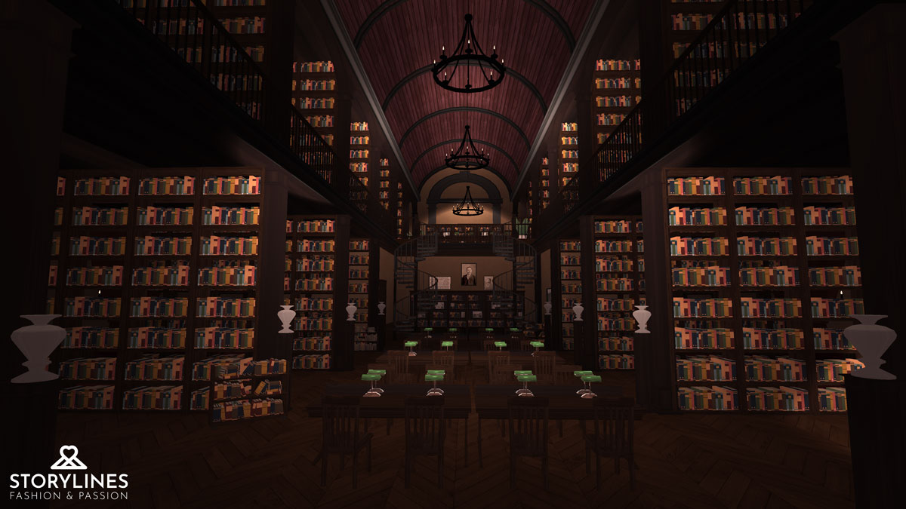
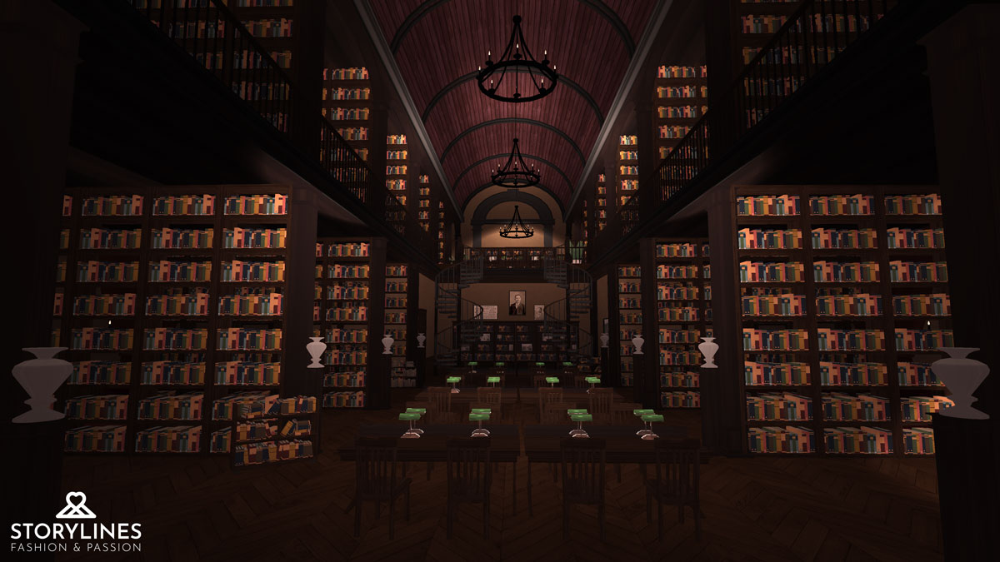


 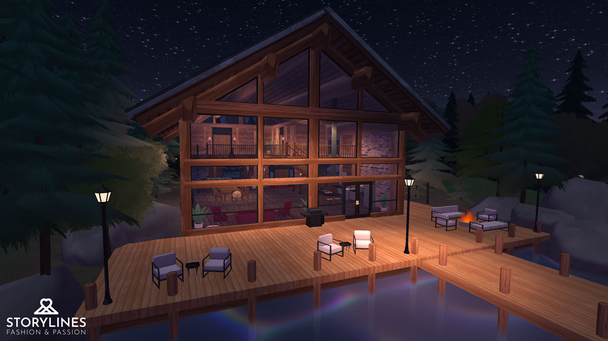
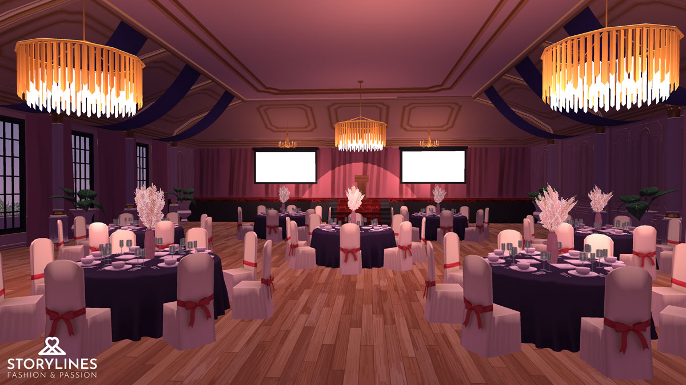
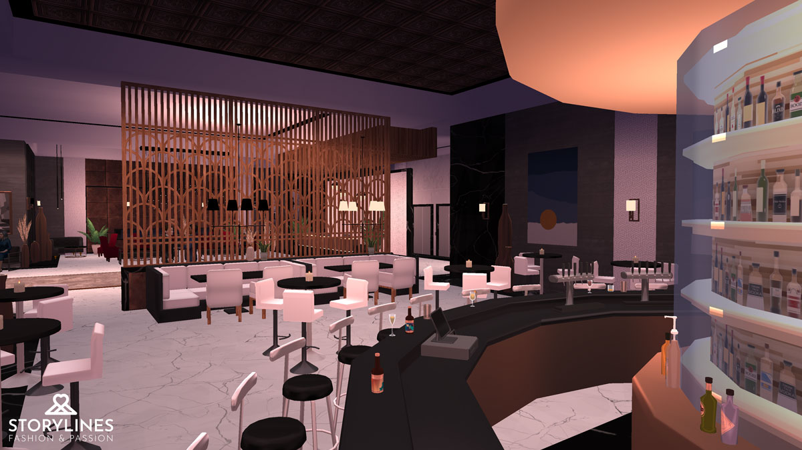
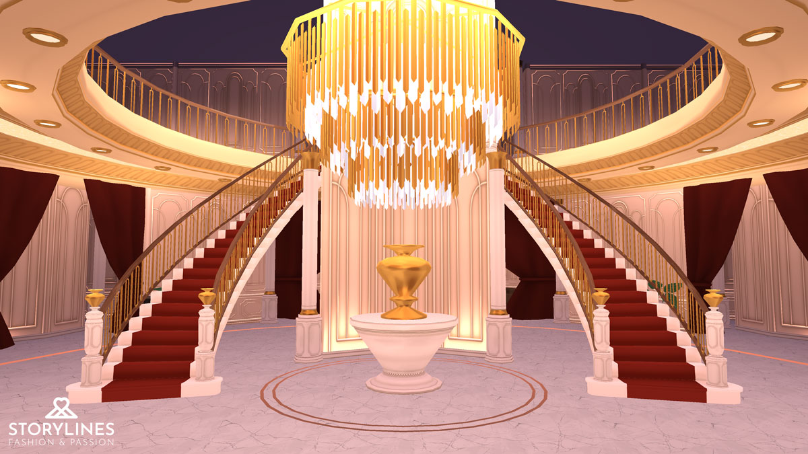
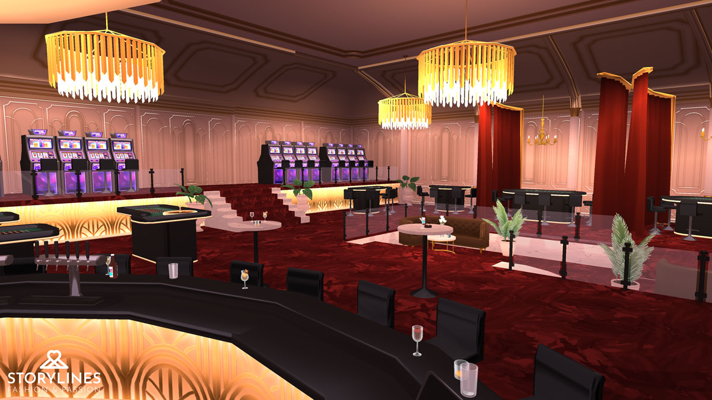
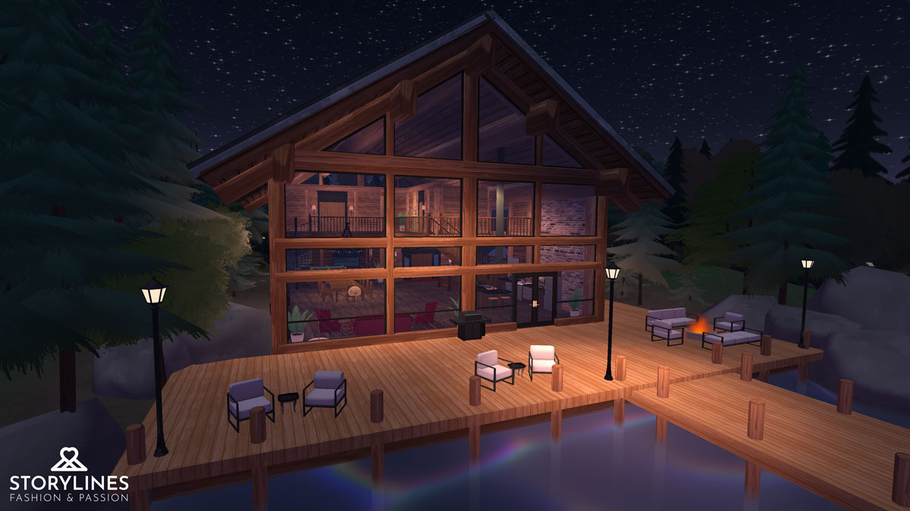
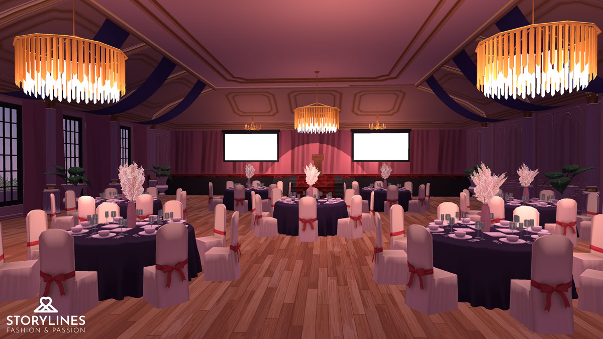
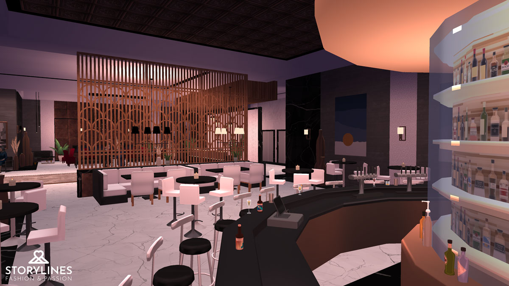
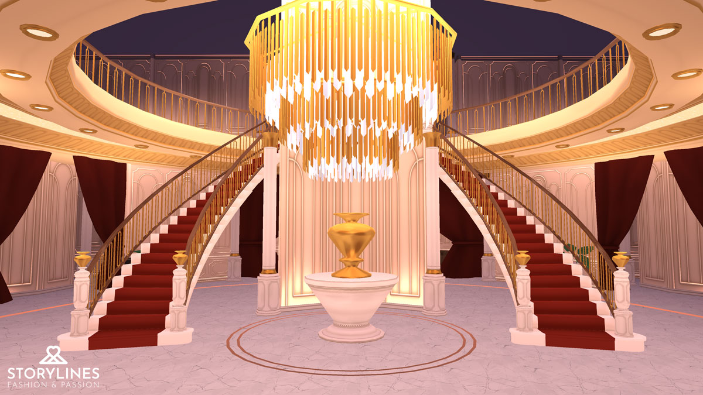
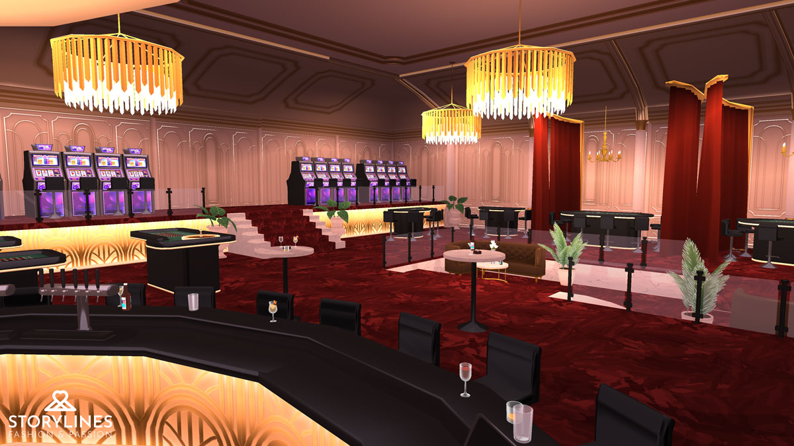


when there was downtime between creating new sets or doing narrative layout, I would also contribute character assets to help fill out our catalog of items. I modelled, textured, rigged, and implemented a variety of character assets such as hats, shoes, clothing, and hairstyles.

 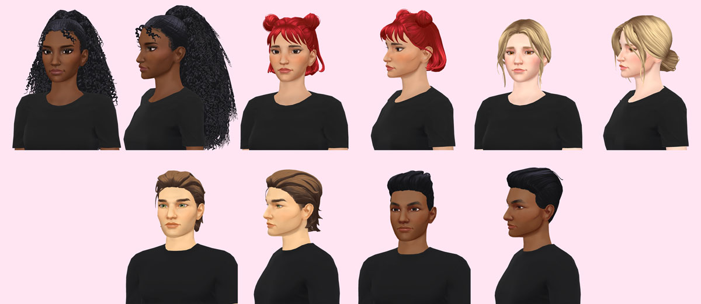
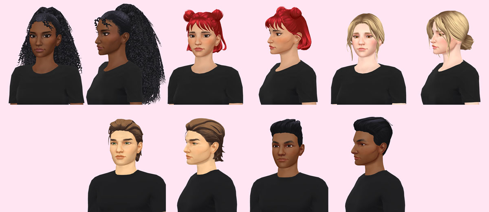
To offer the players more hair customization options without having to create totally new hairstyles, I pitched the idea of adding a hair highlights feature to character customization.
Since the hair texture is greyscale, and the colour applied in-engine, I added the hair highlight masks into the Green and Blue channels of the existing hair textures. This was also important to reduce the number of overall textures in the project, especially as our asset library will only ever expand!
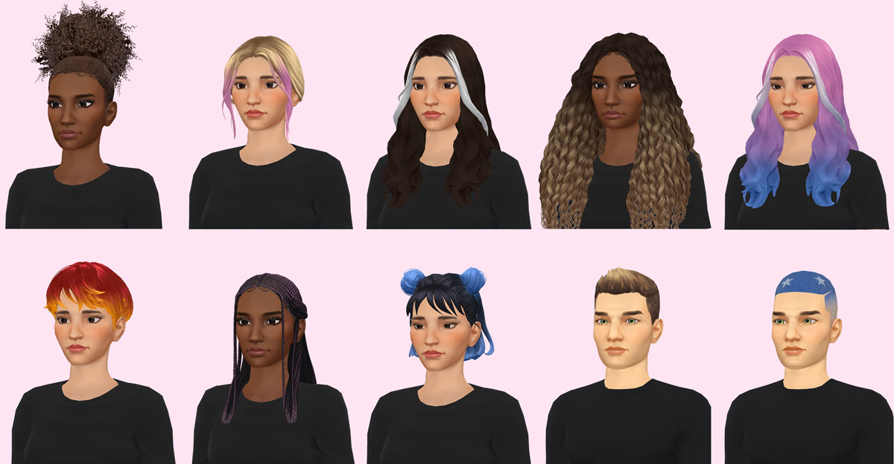
To give as many pattern options as possible, I split the Green channel of the RGBA hair texture into 4 components (0-0.24, 0.25-0.49, 0.5-0.74, 0.75-1), with each highlight option restricted to a different interval. The ombre option is added separately in the Blue channel. All the highlight options are available to mix and match as well, and different colours can be chosen for the base hair color, highlights and ombre. I added the functionality to the existing hair shader, implemented the options to our existing character creation tool, as well as painted the hair masks for all our existing hairstyles.
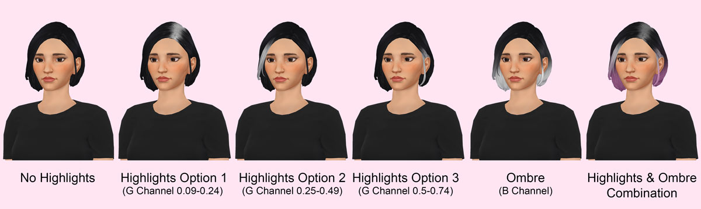
I completed the narrative layout on multiple books, keeping up with a weekly release schedule of new chapters. Referencing the scripts written by the narrative designers, I used our custom in-house tool to implement the stories in Unity. I designed the characters and love-interests, positioned them in the scene, selected the animations, and decided on the composition of the shots. Doing the narrative layout also involved keeping track of branching narratives with variables, integrating the special rewards, and implementing music and sound effects.